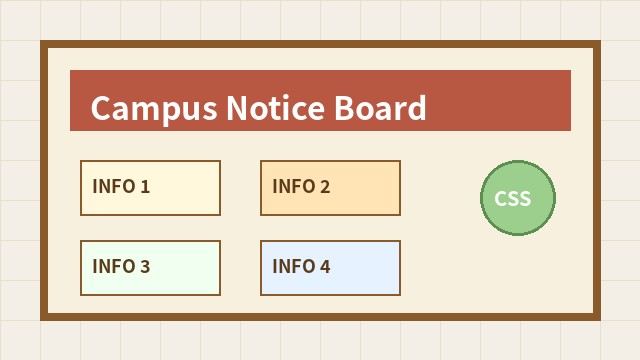

文字の設定
文字サイズはfont-size、文字色は colorで指定します。
フォントの種類はfont-family で指定します。
背景と画像
背景色はbackground-color、背景画像は background-imageで指定します。

ボックスモデル
ボックスモデルでは、内容、内側の余白、枠線、外側の余白を区別します。
このページは、CSSの文字設定、背景、ボックスモデルを確認するための練習ページです。
CSSは、セレクタ、プロパティ、値の形で書きます。
文字サイズはfont-size、文字色は colorで指定します。
フォントの種類はfont-family で指定します。
背景色はbackground-color、背景画像は background-imageで指定します。

ボックスモデルでは、内容、内側の余白、枠線、外側の余白を区別します。